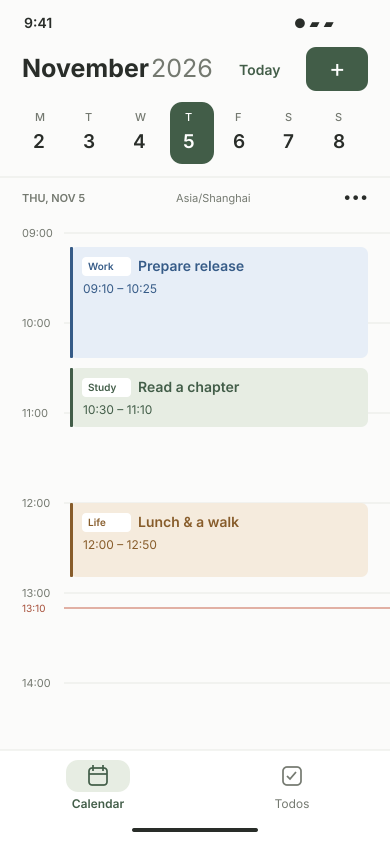
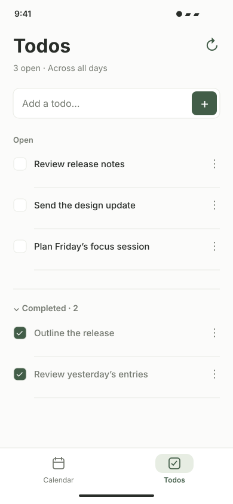
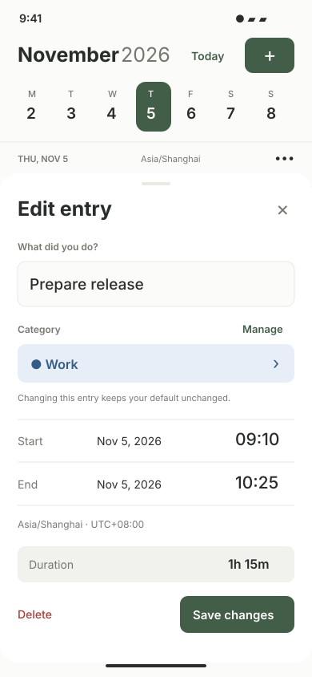
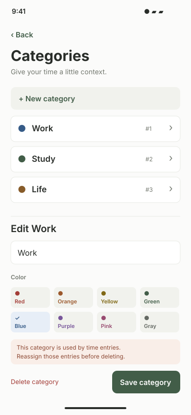

01 / CalendarA full-height timeline with category colors and Calendar / Todos bottom tabs.
02 / TodosA dedicated Todos tab with quick capture, open items and expandable completed items.
03 / Entry detailsA focused sheet with category, exact times and a reachable save action.
04 / CategoriesNamed colors, editable categories and a clear explanation when deletion is blocked.